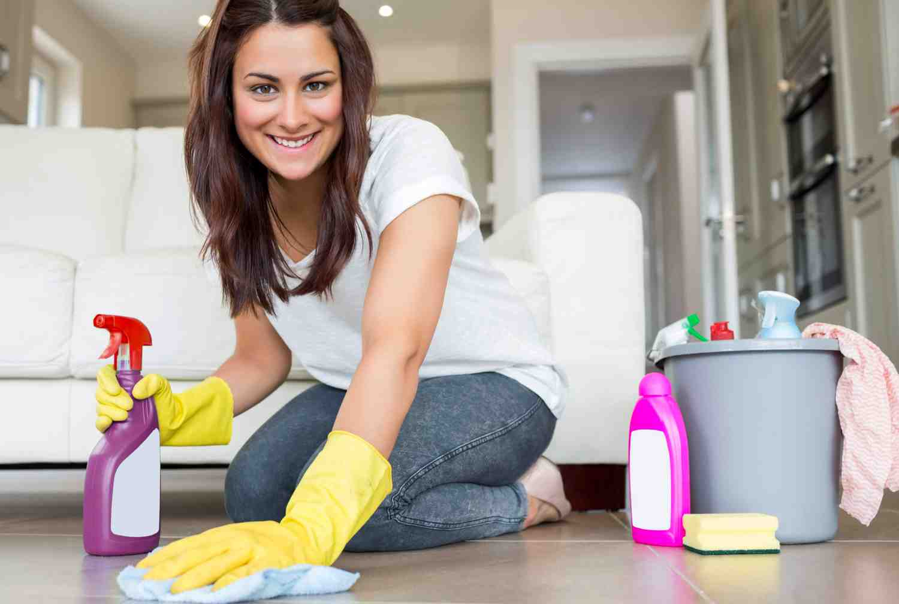
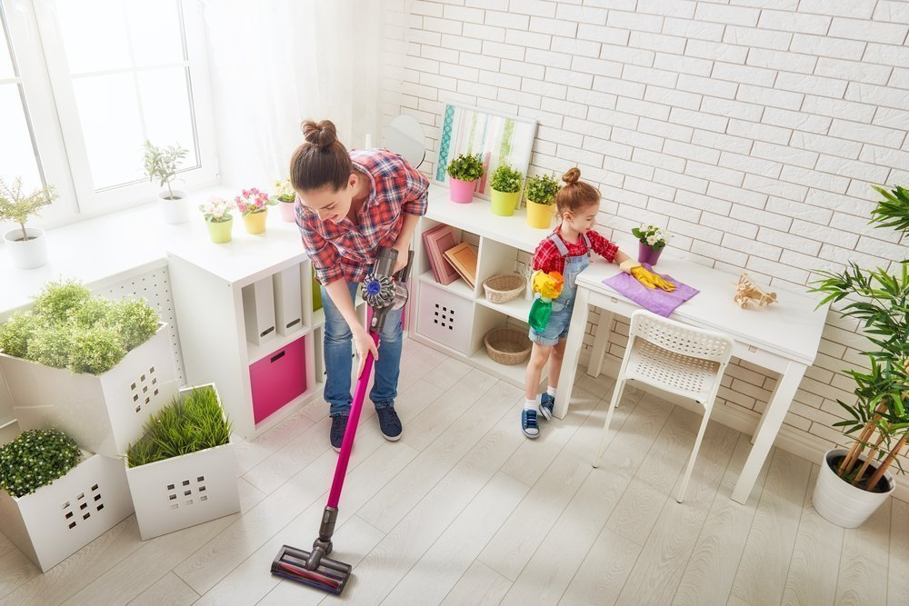

Подготовка квартиры к дезинсекции.
Перед проведением дезинсекции необходимо подмести помыть полы и провести влажную уборку, в том числе под кроватью, шкафами и прочей мебелью.
Бытовую технику, компьютеры выключить из розеток. Мониторы завесить тканью или полиэтиленом. Кондиционер отключить.
Обеспечьте доступ к плинтусам, отодвинув мебель от стен.
Диван разложите, постельное белье не снимайте. Достаньте вещи из диванных ящиков и оставьте их для дезинфекции. Убирать вещи в полиэтиленовые пакеты не требуется.
Бытовую технику, компьютеры выключить из розеток. Мониторы завесить тканью или полиэтиленом. Кондиционер отключить.
Обеспечьте доступ к плинтусам, отодвинув мебель от стен.
Диван разложите, постельное белье не снимайте. Достаньте вещи из диванных ящиков и оставьте их для дезинфекции. Убирать вещи в полиэтиленовые пакеты не требуется.

Плинтуса. Откручивать плинтуса до приезда специалиста не требуется. На случай такой необходимости, приготовьте набор отверток.
Обои. Не следует самостоятельно обрывать обои, даже если под ними обнаружено гнездо клопов, дабы насекомые не расползлись по квартире.
Шкафы, комоды, полки. Все ящики должны быть плотно закрыты. Заранее доставать одежду из шкафов нет необходимости, специалист обработает только внешние поверхности шкафа. Если в гардеробе лежат постиранные вещи, насекомых, с большой степенью вероятности, там не обнаружится. Если вещи лежали на диване, зараженном клопами, их нужно постирать при температуре от 60С.
Ковры. По возможности ковры необходимо вытащить из-под ножек мебели, чтобы после обработки от клопов и тараканов ковер можно было свернуть и обработать пол. Дезинфектор в этом может вам помочь.
Картины, фото в рамках, подвесные сувениры, часы, зеркала, иконы нужно снять и разложить на столе лицевой стороной вниз.
Сувениры, статуэтки, мелкие предметы необходимо сложить в пакет или коробку и убрать в шкаф на время обработки.
Обои. Не следует самостоятельно обрывать обои, даже если под ними обнаружено гнездо клопов, дабы насекомые не расползлись по квартире.
Шкафы, комоды, полки. Все ящики должны быть плотно закрыты. Заранее доставать одежду из шкафов нет необходимости, специалист обработает только внешние поверхности шкафа. Если в гардеробе лежат постиранные вещи, насекомых, с большой степенью вероятности, там не обнаружится. Если вещи лежали на диване, зараженном клопами, их нужно постирать при температуре от 60С.
Ковры. По возможности ковры необходимо вытащить из-под ножек мебели, чтобы после обработки от клопов и тараканов ковер можно было свернуть и обработать пол. Дезинфектор в этом может вам помочь.
Картины, фото в рамках, подвесные сувениры, часы, зеркала, иконы нужно снять и разложить на столе лицевой стороной вниз.
Сувениры, статуэтки, мелкие предметы необходимо сложить в пакет или коробку и убрать в шкаф на время обработки.

Детские игрушки упаковывать не нужно. После проведения дезинсекции игрушки из пластика и других твердых материалов необходимо промыть, мягкие игрушки - постирать.
Домашние животные вместе со всеми их принадлежностями (миски, корм, туалет) должны быть удалены из помещения.
Аквариум необходимо плотно обмотать простыней, выключить подачу кислорода.
Комнатные растения убирать не требуется.
Продукты питания во время дезинсекции не должны находиться в открытом доступе.
Ванную необходимо освободить от полотенец, одежды и гигиенических принадлежностей.
Домашние животные вместе со всеми их принадлежностями (миски, корм, туалет) должны быть удалены из помещения.
Аквариум необходимо плотно обмотать простыней, выключить подачу кислорода.
Комнатные растения убирать не требуется.
Продукты питания во время дезинсекции не должны находиться в открытом доступе.
Ванную необходимо освободить от полотенец, одежды и гигиенических принадлежностей.